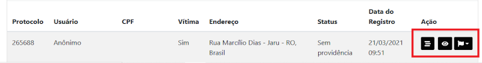
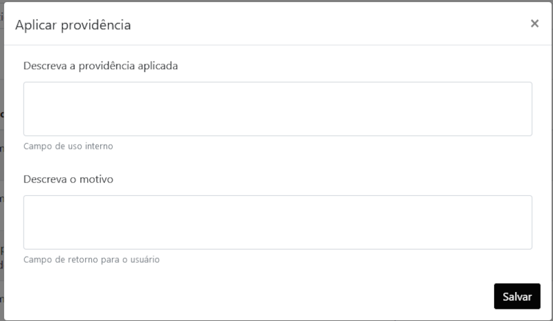
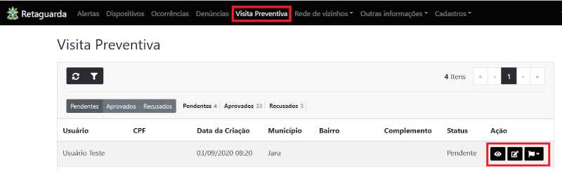
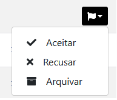
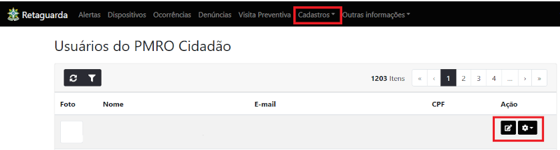
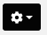
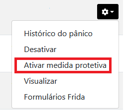
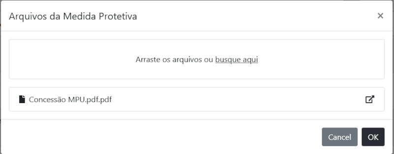
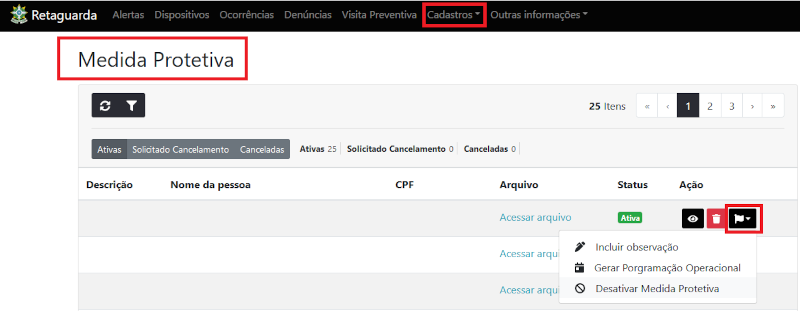

Rotinas Sistema Retaguarda
PMRO Cidadão Retaguarda
Acompanhar denúncias que chegam através do Aplicativo PMRO Cidadão e ativar o Botão do Pânico.
- Acesso ao Sistema
- Tela Inicial
- Acompanhando Denúncias
- Visita Preventiva
- Ativando o Botão do Pânico
- Desativando o Botão de Pânico
Acesso ao Sistema

Acompanhando Denúncias

Clicando no Menu Denúncia tem acesso a toda as denúncias que chegam pelo aplicativo.
Utilizando o ícone de filtro tem a opção para tipo de ocorrência onde pode-se selecionar somente Violência Doméstica.

Os ícones em destaque são:
Visualiza o protocolo da denúncia;
Visualiza as informações da denúncia;
Aplica providência ou Arquiva.

- No campo de uso interno deve ser preenchido com o encaminhado para as Patrulhas Maria da Penha, na impossibilidade destas dever ser empenhada outra guarnição disponível.
- No campo de retorno para o usuário pode ser enviado mensagem sobre as providências para o usuário.
Visita Preventiva
Havendo solicitação pelo aplicativo de Visita Preventiva aparecerá nesta tela, onde deverá ser empenhada viatura da Patrulha Maria da Penha para atender a demanda. Ícones:
Visualiza as informações da solicitação;
Faz o agendamento da visita para a Patrulha através de programação operacional;
Aceita, recusa ou arquiva a Solicitação.

Ativando o Botão do Pânico
Realizar a pesquisa pelo nome ou CPF da Requente na opção Cadastros / Usuários do do PMRO Cidadão.
Após entrar na opção ação no ícone 

Irá abrir menu para adicionar o arquivo em PDF da MPU. 
Adiciona-se o arquivo PDF da MPU ficando assim ativado o Botão de Pânico para a requerente.
Desativando o Botão de Pânico
Entrar no Menu Cadastros / Medida Protetiva
Após realizar a pesquisa pelo nome da Requente usa-se o ícone e clica na opção Desativar medida protetiva.
Em seguida clica no ícone
 para apagar o arquivo PDF de MPU.
Inicio
para apagar o arquivo PDF de MPU.
Inicio